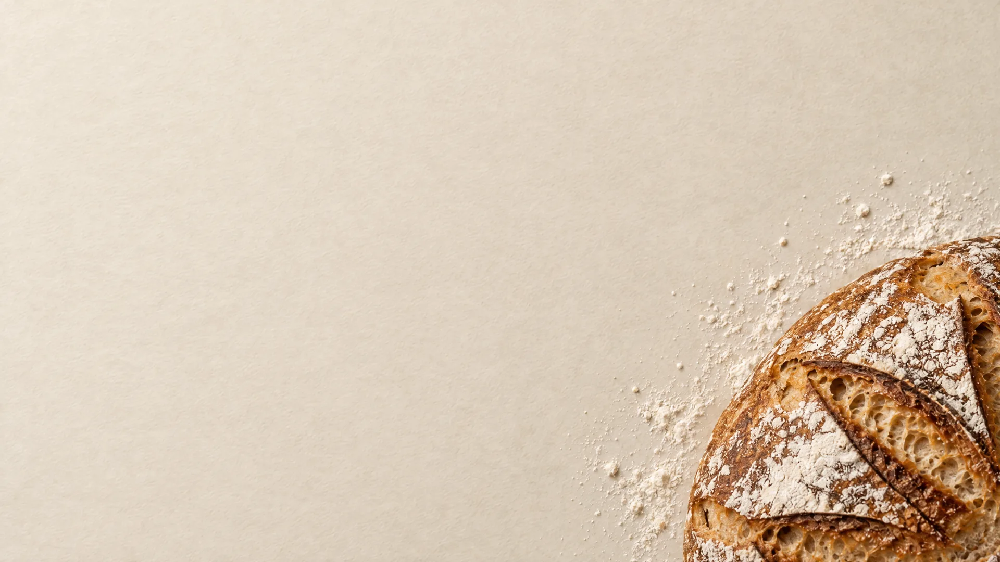
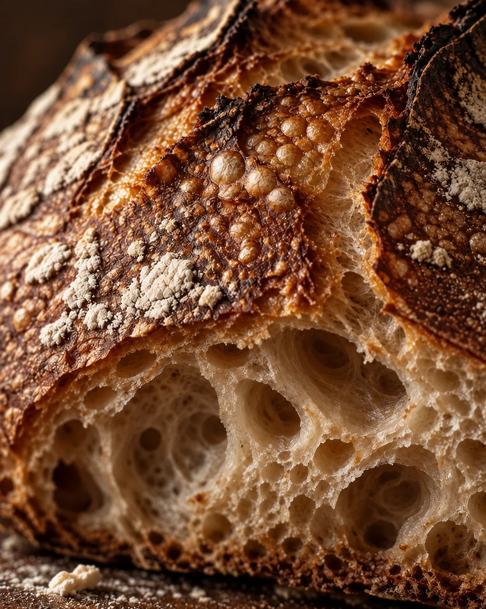
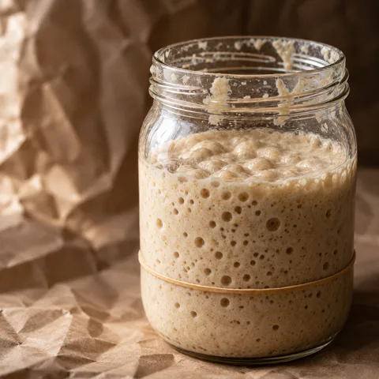
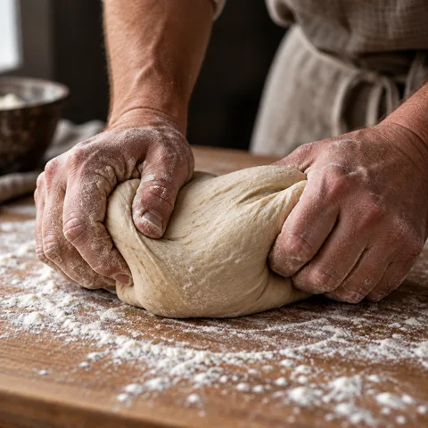
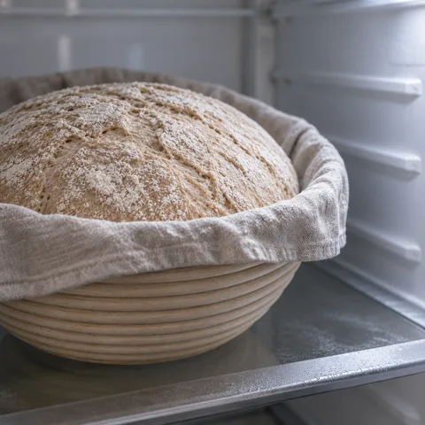
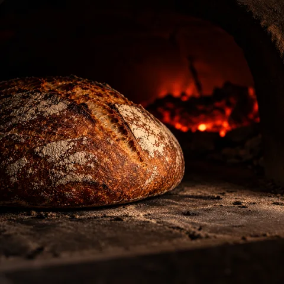
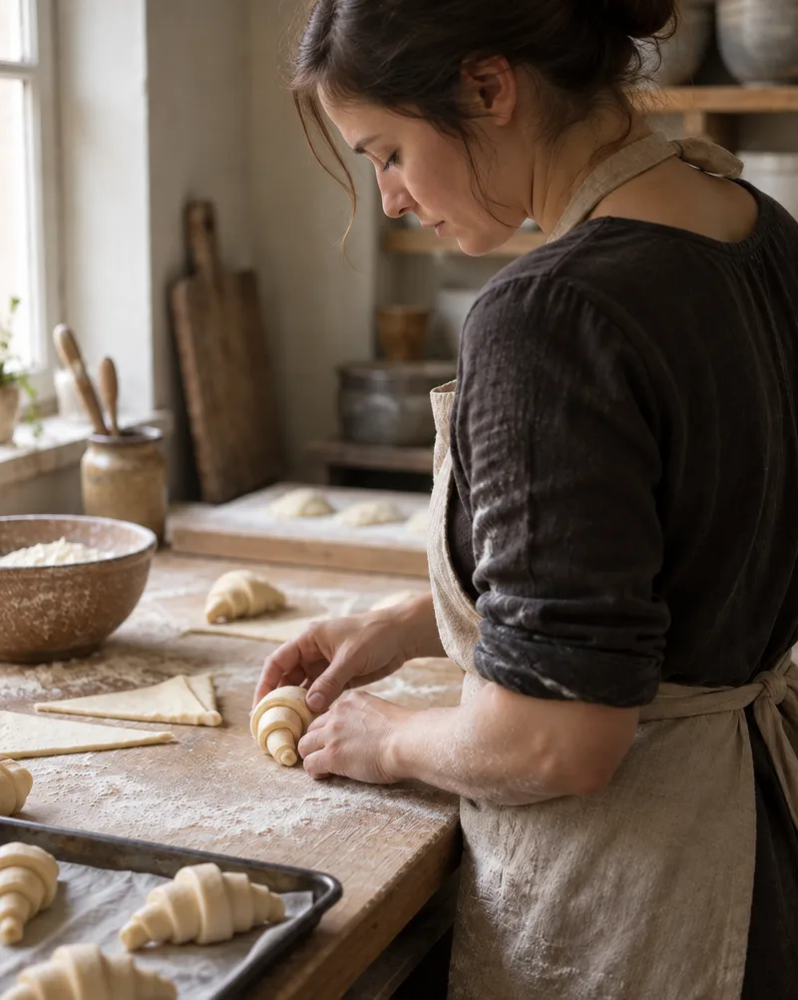
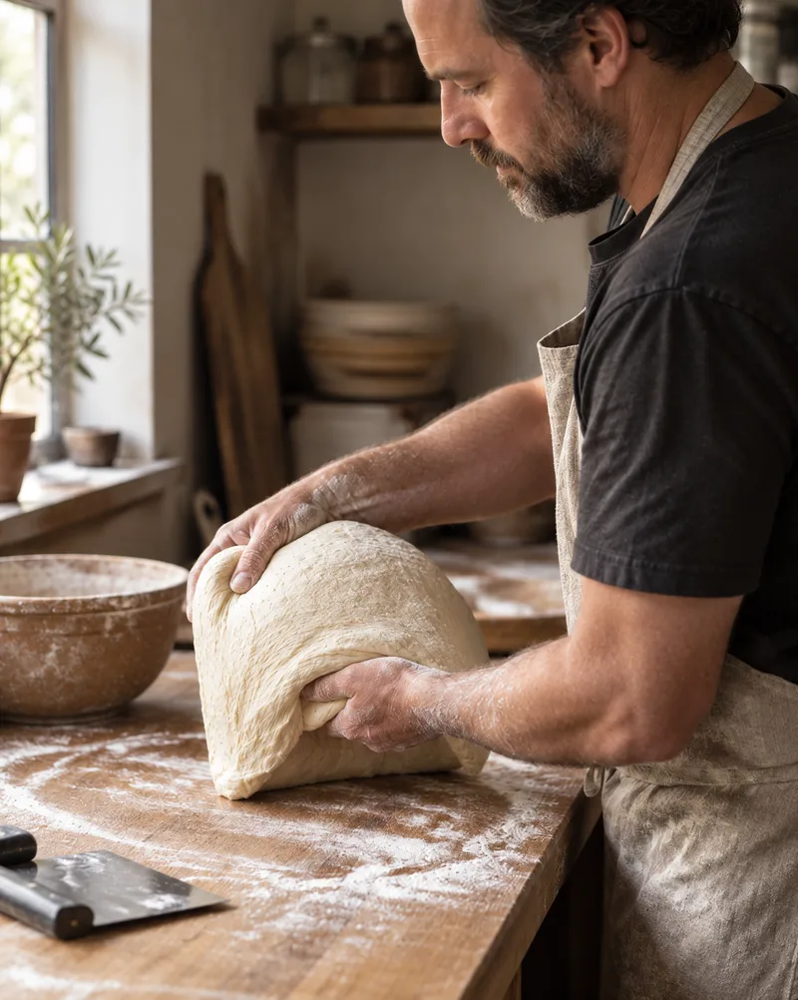
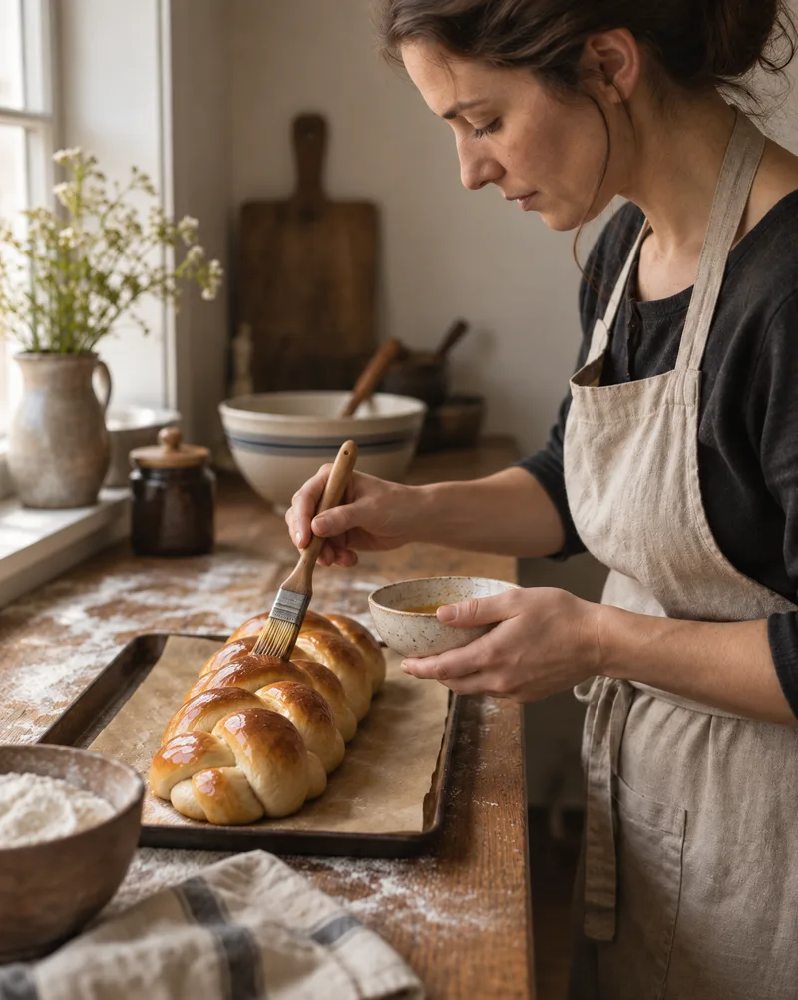

крафтовая пекарня · с 2021 года
Мука
Пекарня на закваске. Москва.
печём каждое утро · с 8 до 20 · Ржанская набережная, 4
глава 01 · ремесло
Мука, вода, соль. И восемнадцать часов.
В «Хлебе» три ингредиента — мука, вода, соль. Всё остальное — время: закваска работает ночью, тесто дозревает в холоде. В остальных буханках — только то, что требует вкус: солод и кориандр в «Тёмном», мёд в «Полбе», корица в «Плетёнке».
«Хлеб» — список из трёх слов и сутки ожидания
Расписание тут жёстче меню и не сдвигается ради спроса. Зато каждое утро в восемь на прилавке лежит буханка с хрустящей коркой, тёплым мякишем и кислинкой, за которую не стыдно.

глава 02 · расписание
Расписание одной буханки
Четыре вехи и сутки с хвостом между первой и последней.
-

21:00 день 1
Закваска
Вечером кормим мукой первого помола и оставляем работать до утра.
-

10:00 день 2
Замес
Руками, пока тесто не станет гладким и упругим.
-

11:00 день 2
Холод
Тесто уходит в шкаф при +4 и стоит там восемнадцать часов. За это время тесто набирает вкус, а мякиш становится пористым.
-

05:00 день 3
Печь
Каменный под, 250 градусов. Работа начинается ранним утром; к открытию первая партия уже на прилавке, и запах стоит на всей набережной.
глава 04 · кто печёт
Кто печёт
-

Анна Соколова
Утренняя выпечка и круассаны.
-

Дмитрий Кузнецов
Замес и холодная расстойка.
-

Ольга Морозова
Заварные хлеба и «Плетёнка».
глава 05 · как найти
Запах доведёт
Москва, Ржанская набережная, 4 — серый дом с белой вывеской на углу.
Каждый день, 8:00–20:00.
Тёплый хлеб — с 8:00, круассаны — с 8:30, багеты — пока не кончатся.
Ориентир простой: багет вместо стрелки и запах корки.
Пекарня вымышленная — маршрута пока нет.
ссылки-заглушки: маршрут и телефон фиктивные